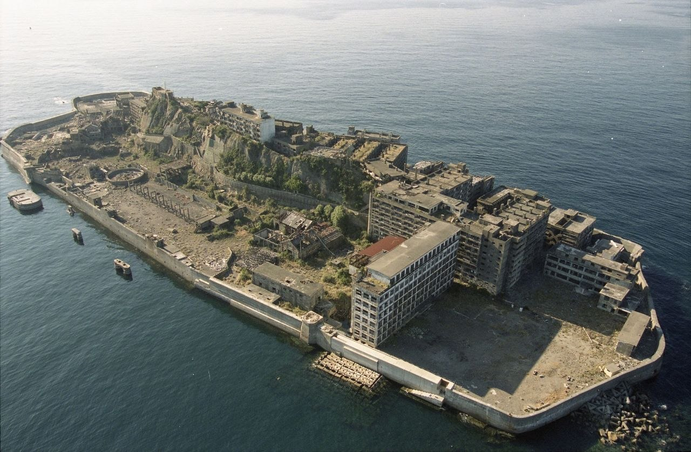
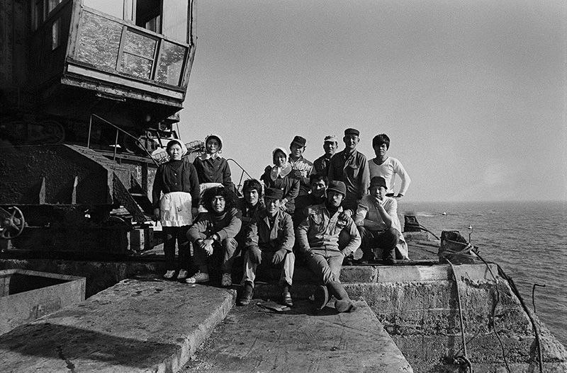
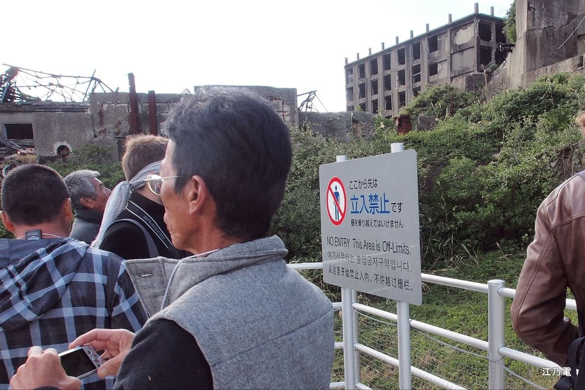
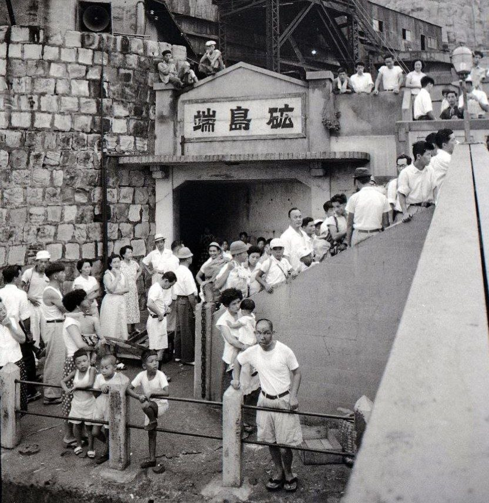
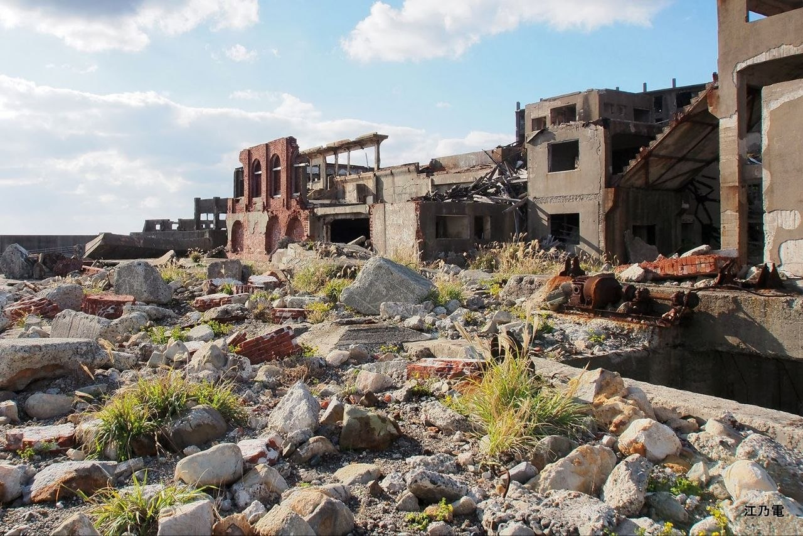
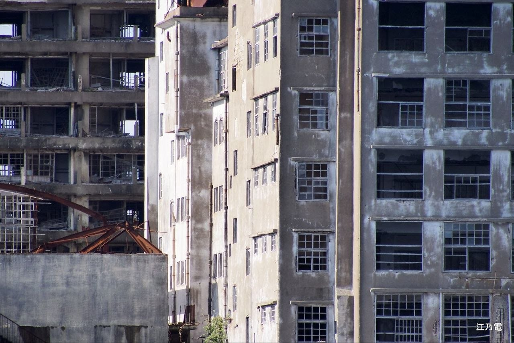
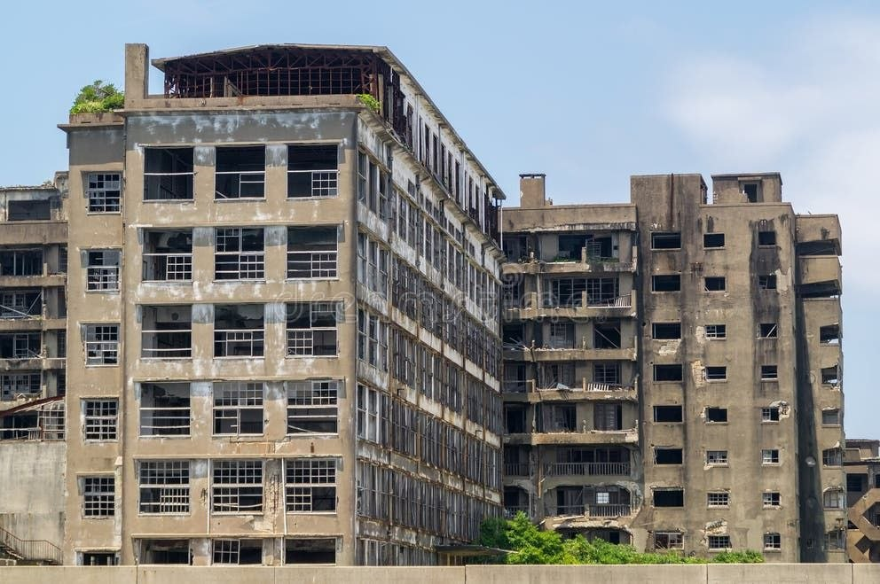
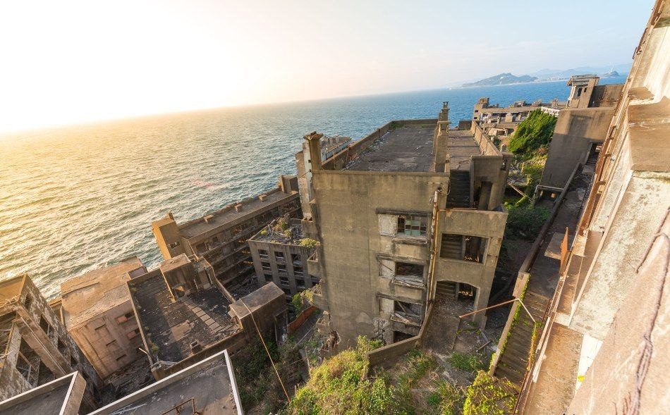

Остров Хасима, более известный в Японии под названием Гункандзима (в переводе «Остров-линкор»), принадлежит к числу самых впечатляющих и мрачных заброшенных мест мира. Этот небольшой кусочек суши находится в Восточно-Китайском море, в 15 километрах от побережья Нагасаки, и издалека поражает суровыми монолитными очертаниями.
В конце XIX века корпорация Mitsubishi превратила скалу длиной полкилометра в процветающий шахтёрский центр. Здесь возводили первые в Японии многоэтажные жилые дома из железобетона, а плотность населения бьёт все исторические рекорды. Однако сегодня Хасима — это полностью опустевший остров-призрак, где жизнь окончательно остановилась на отметке 1974 года.
Общие сведения
Территория острова невероятно мала — всего 6,3 гектара при длине около 480 метров и ширине 160 метров. Название «Гункандзима» закрепилось за ним из-за внешней схожести с военным кораблем: высокий мол и возведённые вплотную друг к другу серые корпуса зданий придают острову силуэт японского линейного крейсера «Тоса».
История освоения
Превращение скалистого острова в промышленный гигант заняло почти столетие.
Открытие угля
1810 годНа острове впервые обнаружили богатые залежи высококачественного каменного угля, что впоследствии превратило его в промышленный объект.
Приобретение Mitsubishi
1890 годПромышленная компания Mitsubishi выкупила Хасиму за 100 000 иен и запустила масштабные работы по сооружению защитных дамб и подводных шахт.
Первый железобетонный дом
1916 годНа острове построили блочный дом № 30 — первое в Японии многоэтажное железобетонное здание, способное противостоять сильным морским тайфунам.
Военные годы
1939–1945 годыПериод максимальной добычи и принудительного труда. Для обеспечения военных нужд страны на остров массово направляли корейских и китайских рабочих и пленников.
Пик населения
1959 годЧисленность населения крошечного острова достигла 5 259 человек, что стало максимальным показателем плотности населения, зарегистрированным на планете.
Закрытие шахт
1974 годНефть окончательно вытеснила уголь, что сделало добычу угля не выгодной. В январе 1974 года шахты официально закрыли, а к апрелю остров покинули последние жители.
Архивные и современные кадры

Шахтёрский коллектив Оохаси, 1972 год.

Современный туризм по острову.
Вертикальный муравейник
Так как возможности горизонтального расширения суши были невозможны, проектировщики направили строительство вверх. Хасима превратилась в лабиринт из многоэтажных корпусов, крутых лестниц, открытых переходов и крытых галерей защищённых от тихоокеанских ветров.
Несмотря на суровые условия и изоляцию, остров обладал высокой степенью бытового комфорта по стандартам середины XX века. Все квартиры были подключены к электросети и радио. Однако из-за отсутствия открытой почвы на острове не было естественной зелени, поэтому жителям приходилось устраивать сады и скверы прямо на крышах жилых зданий.
Архитектура и глубина шахт
Чтобы добраться до угольных пластов, инженеры Mitsubishi прорубили вертикальные стволы прямо сквозь скалистое основание острова, а от них развели горизонтальные тоннели во все стороны под дном Тихого океана.

Параметры подземной инфраструктуры:
Предельная глубина
Нижние рабочие горизонты находились на глубине до 1000 метров ниже уровня моря, куда горняки спускались по наклонным штрекам от основных вертикальных путей (которые опускались примерно на 600-700 метров вниз).
Протяжённость тоннелей
Общая длина разветвлённой сети подводных тоннелей превышала 160 километров. Горные работы велись под землёй на расстоянии до 3-4 километров от самого острова.
Ключевые шахтные стволы:
- • Первый ствол (1890–1895) — заложен на начальном этапе добычи, глубина составила около 175 метров.
- • Второй и Третий стволы — пройдены в начале XX века для расширения выработок в более глубоких местах.
- • Четвёртый главный ствол (1935) — связывал остров с самыми богатыми и глубокими угольными пластами.
Условия труда и опасности
Условия труда на Хасиме считались одними из самых суровых в истории мировой горнодобывающей промышленности.
На километровой глубине температура воздуха составляла 30–35 °C при влажности близкой к 95-100%. Шахтёры были вынуждены работать в условиях постоянной загазованности и высокой концентрации угольной пыли. Отсутствие качественной защиты и вентиляции приводило к быстрому развитию силикоза.
Кроме того, колоссальное давление океанских вод вызвало постоянное просачивание воды сквозь горную породу, что разъедало механизмы и повышало риск обвалов.
Аварии и человеческие жертвы
За восемь 84 года эксплуатации подводного месторождения на острове зафиксированы десятки аварий, унёсших жизни сотен людей.
Основные причинные факторы катастроф:
- Взрывы метана и угольной пыли:
- Самые страшные аварии происходили из-за детонации метана. Взрыв в замкнутых пространтсвах приводил к мгновенному выгоранию кислорода и обвалам. Крупная
авария 1906 года унесла жизни более 30 человек, а последующие инциденты 1930-х годов регулярно приводили к гибели
рабочих.
- Прорывы морской воды:
- Несколько раз тоннели затапливало океанской водой из-за смещения пластов. В таких случаях у рабочих на
нижних горизонтах
практически не оставалось шансов подняться на поверхность по клетям (лифтам).
- Период Второй мировой войны (1939–1945):
- В эти годы безопасность была сведена к нулю. Около 500–800 корейских и китайских подневольных рабочих
погибли в шахтах
от истощения, обвалов, несчастных случаев и болезней. Их смены длились по 12 часов в сумасшедшем темпе для
нужд японской
военной машины.
- Общее число жертв:
- По официальным данным и историческим оценкам, за всё время работы шахты в результате несчастных случаев,
заболеваний и истощения погибло более 1300 человек (из них около 215 — корейские рабочие во время
войны).


Безавтомобильный город
На Хасиме не было автотранспорта — в нём не существовало потребности. Все здания соединялись сложной системой переходов, лестниц и внутренних коридоров.

Полная автономия
На территории острова функционировали школа, больница, детский сад, бассейн, кинотеатр, магазины, религиозные святилища и даже клубы.

Сады на крышах
Чтобы компенсировать отсутствие зелени, жителям приходилось доставлять грунт с материка и создавать огороды на крышах домов.
Городские легенды
Богатое прошлое и десятилетия полнейшего запустения превратили Хасиму в объект многочисленных мифов.
Призраки заброшенных шахт.
В современной Японии популярна легенда о том,
что остров населён духами погибших горняков. Рыбаки из окрестных деревень иногда упоминают про
странные гулы, шумы и шепоты, доносящиеся со стороны острова в туманные ночи.
Призрак «Шахты № 4».
Шахта № 4 считалась у рабочих проклятым местом после крупной аварии с затоплением. Существует легенда о шахтёре, якобы спустившемся вниз за инструментами прямо перед закрытием острова и бесследно
исчезнувшем в подземных лабиринтах.
Современное состояние и наследие
В 2015 году остров Хасима был внесен в список объектов Всемирного наследия ЮНЕСКО в составе исторического комплекса «Объекты промышленной революции Мэйдзи».
Территория находится под постоянным контролем властей Японии. Несанкционированный доступ на остров категорически запрещён. С 2009 года для организованных групп туристов открыт специально оборудованный и укреплённый маршрут, однако доступ во внутренние помещения жилых зданий закрыт из-за риска обрушения перекрытий.
Влияние стихии
С момента закрытия комплекса прошло полвека, и остров стал иллюстрацией того, как природа и морская стихия отвоюют своё. Солёные ветра, тайфуны и эрозия разрушают бетон быстрее, чем предполагали архитекторы.
Несмотря на разрушение, Хасима остаётся уникальным памятником индустриальной эпохи, притягивающим внимание историков, фотографов и урбанистов со всего мира.